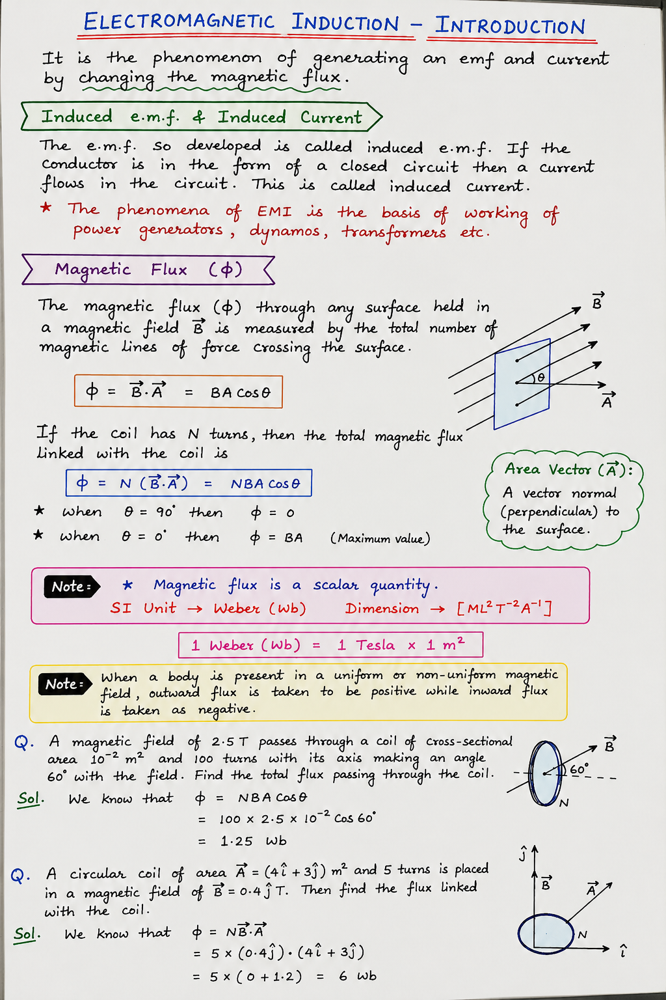

About
I am a physicist and educator from Ashmuji, Kulgam, with a strong background in computational and theoretical physics. I completed my schooling at Govt. Higher Secondary School, Ashmuji, followed by B.Sc. and M.Sc. in Physics from Aligarh Muslim University, and earned my Ph.D. in Physics from NIT Srinagar. My research experience spans DFT, atomistic, and micromagnetic simulations, with a particular focus on the magnetic properties of transition-metal-based nanostructures. As an educator, my teaching philosophy emphasises clarity, problem-solving, and connecting mathematical formalism with physical intuition.
Research
- Magnetic-ordering temperature of cobalt/nickel bimetallic nanoparticles: a Monte Carlo investigation
- In-depth study of double perovskite Sr2NiTaO6: Structural, electronic, thermoelectric, and spintronic properties for sustainable and high-performance applications
- Magnetic features of hybrid transition metal-rare earth nanoparticles: Monte Carlo simulations
For full publications, visit my ResearchGate.
Writing
I publish reflective essays, anecdotes and pieces that explore science, place, and personal narrative. Read more at Cashmeer Epistles.
Contact
Email: ratherjunaid67@gmail.com
WhatsApp: +91 84910 23854
Classroom Notes



Simulation Physics
Explore interactive physics simulations and virtual laboratory experiments to strengthen conceptual understanding.